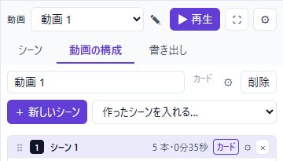
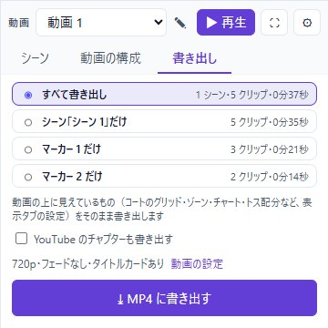

5. シーンと動画を作る
見せたいプレーをシーンに入れてマーカーで分け、シーンを動画に並べて MP4 に書き出します。
シーンにプレーを入れる
- はじめてのときは、右の動画を作成とシーンを作成を押します。「動画 1」と「シーン 1」ができます。
- プレー一覧の右端の 1〜5 を押すと、そのプレーがそのマーカーで今のシーンに入ります。行を選んでから数字キー 1〜5 を押しても同じです。
- 右のシーンに、マーカーごとにクリップが並びます。

- 同じ数字をもう一度押すとマーカーが外れます。0 ですべて外れます。1 つのプレーに、いくつでもマーカーを付けられます。
- マーカーの名前（「マーカー 1」など）は、押すと書き換えられます。タイトルカードにこの名前が出ます。
- 左の ⠿ をドラッグすると、クリップやマーカーの順番を変えられます。
- マーカーなしのクリップは、再生にも書き出しにも入りません。
- D F で、シーンの前後のクリップへ移ります。
クリップの長さを変える
クリップを選ぶと、動画の下の編集タブに、そのクリップの範囲が出ます。紫の帯の両端をドラッグするか、IN・OUT の秒数を入れて変えます。秒数はキープレー（そのプレーの時刻）からの相対値です。[ ] で、今の再生位置を IN・OUT にできます。＋ スローと＋ 停止で、クリップの一部をゆっくり流したり、止めたりできます。
シーンを動画に並べる

- 右の動画の構成タブを開きます。
- ＋ 新しいシーンで別のシーンを作るか、作ったシーンを入れる…から既にあるシーンを選んで入れます。
- シーンをドラッグして順番を決めます。カードで、シーンの前のタイトルカードを出すかどうかを切り替えます。
1 つのシーンは、いくつの動画に入れてもかまいません。シーンを直すと、そのシーンを使っているすべての動画に反映されます。
MP4 に書き出す

- 右の書き出しタブを開きます。
- 書き出す範囲を選びます。すべて書き出しは動画全体、ほかに 1 つのシーンだけ、1 つのマーカーだけも選べます。
- ↓ MP4 に書き出すを押し、保存先を選びます。
- 動画の上に見えているもの（コートのグリッド、ゾーン、チャート、セット配分など）は、そのまま書き出しにも入ります。
- フェード、タイトルカード、スコアボードやテロップの見た目は、動画の設定で変えます（10 章）。
- YouTube のチャプターも書き出すにすると、シーンの始まりを YouTube のチャプターにしたテキストファイルが MP4 の横にできます。
- 書き出しにはログイン（お試し中か契約中）が必要です。